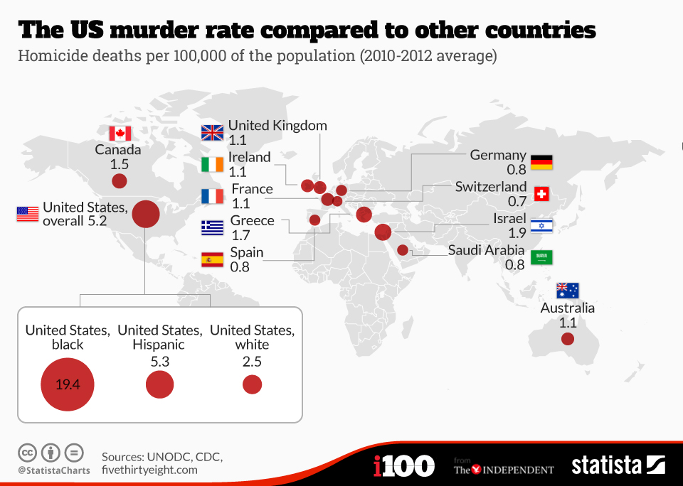
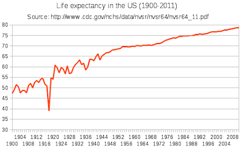

Business Analytics Projects
As a business analytics concentrator, I have had the opportunity to work on various team projects. In this setting, we take a data set and conduct analysis all the while writing
key insights in a well-written format. These are some projects that I have worked on.

U.S. Homicide Rates
The U.S. has high homicide rates compared to the average of those for countries all over the world. In this analysis, we created 6 graphs to depict
trends in our data. Our analysis further explores key information about homicides and whether there were factors that influenced such rates.
Read the analysis

Life Expectancy
Life expectancy has almost doubled since 1923. To determine possible causes of this great change,
we ran an analysis of a global life expectancy dataset. We created 8 graphs to further disect the impact these factors have on life expectancy.
Our written analysis contains findings and conclusions we have determined after looking at our dataset.
Read the analysis
Code